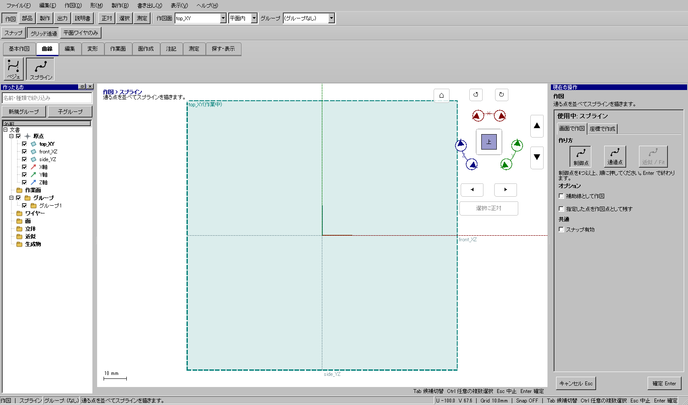

3つの指定点を通る滑らかな曲線を作る
3つの指定点を通る滑らかな曲線を作る
使う機能：スプライン
制御点と通過点では曲線の決まり方が異なります。まず通過点方式で3点を置きEnter、次に制御点方式で4点以上を置く例を比べます。
指定点を通る曲線ができる。制御点方式とは点の意味が異なる。
1 準備 — 元の図形から作る
top_XYに正対する。
まだ用意できていなければ、次の手順を先に行ってください。既にモデルがある場合も、例の座標・大きさ・面の向きを自分のモデルへ読み替えます。
- 指定座標の直線・円・円弧を準備する — 図形の作成から順に練習できます。
練習前にKCD2を別名保存します。数値の長さはmm、角度は度です。平面内のu/vと世界XYZを区別します。
2 使う道具を開く — 押す場所
- 作図 → 曲線 → スプライン
別の入口：Ctrl+K → スプラインを検索 → 候補の用途を確認して開きます。別モードなら「全モードから探す」をオンにします。

3 操作手順 — 一つずつ進める
1 スプラインを選び通過点の方式にする
この段階で確認：この操作で使う入力：top_XYに正対する
2 (0,0),(10,8),(20,0)を置く
この段階で確認：使う対象・値：作り方: 通過点
3 Enterで確定する
この段階で確認：指定点を通る曲線ができる。制御点方式とは点の意味が異なる。
4 設定する欄と数値
ボタン名・欄名と、今回使う値を対応させてください。項目が出ていない場合は作り方・モードが合っているか確認し、ペイン内をスクロールします。
| 見る欄・役割 | この例の設定と意味 |
|---|---|
| 方式 | 通過点 |
| 点 | 0,0／10,8／20,0 |
| 完了 | Enter |
選択の確認：役割欄の名前と3Dの強調を照合します。重なって拾いにくい時はTabで候補を替えます。全体を使う例では左一覧の要素名を選び、3Dの1辺選択と区別します。

この実画面は既存操作試験の一場面で、下の数値例の完成画像とは限りません。設定・選択の操作画面。具体的な完成例は段階写真のある作業例を参照してください。
5 確定して結果を確認
必要な入力と数値をそろえ、下見と状態欄を確認して、右ペインの作成・適用・確定ボタンを押します。Enter対応の道具はEnterでも確定できます。
指定点を通る曲線ができる。制御点方式とは点の意味が異なる。
形を作る操作では、元と結果の名前を分けて一覧で確認し、必要に応じて元を一時非表示にします。表示だけの機能では形状や要素数を変えることが目的ではありません。
6 取消・やり直し・保存
Escで未確定の入力を取り消します。道具を終えるには選択（V）か別の道具へ切り替えます。確定済みの図面変更はCtrl+Z、やり直しはCtrl+Yです。
モデルの編集正本はKCD2、説明書の編集正本はKCIです。外部へ出力するだけの機能では、出力ファイルと編集元を両方残してください。
進めない場合 — 症状から戻る場所を探す
| 起きていること | 確認して直す場所 |
|---|---|
| Enterで作れない | 必要点数を確認 |
| 近似/Fitを選びたい | 現在は未対応。通過点か制御点を使う |
この機能の入力条件：通る点を並べてスプラインを描きます。
計算中は処理表示を見ます。失敗が出たら、対象・入力条件を変えずに何度も押すのでなく、案内にある対象と条件を確認します。
別の方式・条件で使う
制御点
まず主手順で入力の役割を確認し、この例の値と操作へ置き換えます。
この例の準備：top_XY
制御点方式を選び4点以上を順に置きます。中間点を必ず通るわけではなく、制御多角形で曲がり方を調整します。Enterまで未確定です。
- 制御点方式
- 4点を配置
- Enter
結果の見分け方：制御点で形を操る曲線。中間点は通常通らない
この実画面は既存操作試験の一場面で、下の数値例の完成画像とは限りません。方式間で共通の入力欄を確認する参考画面です。この方式・上記の数値で確定した結果の画像ではありません。
通過点
まず主手順で入力の役割を確認し、この例の値と操作へ置き換えます。
この例の準備：top_XY
通過点方式を選び3点以上を置きます。例は4点を使います。制御点方式と同じ点配置でも曲線が変わることを、別名で作って比較します。
- 通過点方式
- 4点を配置
- Enter
結果の見分け方：指定した4点を通る曲線
この実画面は既存操作試験の一場面で、下の数値例の完成画像とは限りません。方式間で共通の入力欄を確認する参考画面です。この方式・上記の数値で確定した結果の画像ではありません。
参考画面の出典と確認範囲
試験名：HP-COMMAND 台帳の全コマンドが同じ入口から呼べる。試験全体の結果：passed。画像はコマンド呼出し直後で、入力待ち・下見の場合もあります。各段階の完成証拠ではありません。